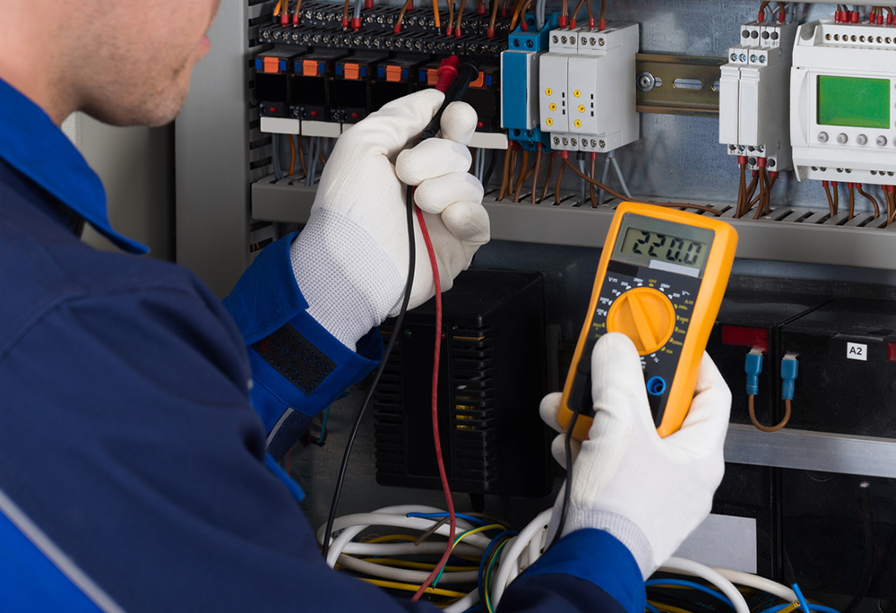

Agente autorizado:


Oferecemos uma ampla gama de serviços de manutenção para atender às suas necessidades eletrônicas. Nossa equipe de técnicos altamente qualificados está pronta para ajudar.
Nossos Serviços
Á IBO Services é sua solução em Manutenção Industrial de Eletrônicos, na vanguarda da tecnologia e da confiabilidade, a IBO Services é especialista em manutenção industrial de eletrônicos. Com vasto conhecimento e um compromisso inabalável e excelência, oferecemos uma gama completa de serviços de manutenção eletrônica para atender às necessidades de empresas em diversos setores industriais.
Reparo Rápido: Sabemos o quão frustrante é quando um dispositivo quebra. Oferecemos reparos rápidos para que você possa voltar a usar seu eletrônico o mais rápido possível.

Atualização: Se você deseja melhorar o desempenho, podemos ajudar com atualizações para garantir que ele esteja pronto para as tarefas mais exigentes.
Manutenção Preventiva: A prevenção é a chave para evitar problemas futuros. Oferecemos serviços de manutenção preventiva para prolongar a vida útil.
Assistência Técnica Especializada: Nossa equipe possui conhecimento especializado em uma variedade de marcas e modelos, garantindo que seus dispositivos sejam tratados com cuidado.
Por que Escolher Nossos Serviços?
Profissionalismo
Somos dedicados a fornecer serviços de alta qualidade com um toque pessoal. Tratamos seus dispositivos como se fossem nossos.Transparência
Mantemos você informado durante todo o processo de manutenção. Sem surpresas desagradáveis.Rapidez e Eficiência
Valorizamos seu tempo. Realizamos reparos de forma rápida e eficiente para minimizar o tempo de inatividade dos seus eletrônicos.Preços Competitivos
Oferecemos serviços de alta qualidade a preços acessíveis. Não comprometemos a qualidade por economia.Mantenha-se conectado e desfrute dos seus dispositivos eletrônicos ao máximo com a nossa ajuda. Entre em contato conosco hoje para agendar uma consulta ou saber mais sobre como podemos atender às suas necessidades de manutenção de eletrônicos. Sua satisfação é nossa prioridade, e estamos ansiosos para ajudar você a voltar a funcionar sem problemas.